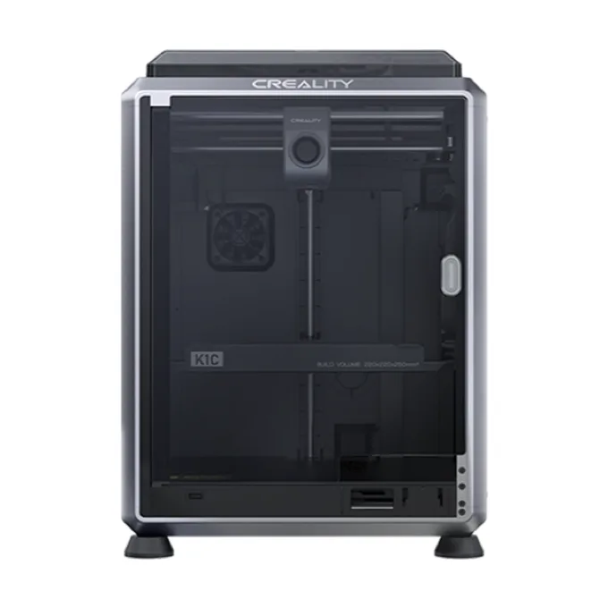

Reparación de Creality K1, K1C y K1 Max en CDMX
Reparamos Creality K1 en nuestro taller de la Ciudad de México, sobre Av. División del Norte, en Letrán del Valle. La serie K1 son CoreXY cerradas y rápidas: la K1 y la K1C con 220 mm de cama y la K1 Max con 300 mm. La K1C trae boquilla de cambio rápido y extrusor para filamentos con fibra. Lo que más entra es el cabezal: el bloque calefactor cerámico que deja de calentar o marca error de temperatura, y extrusores que dejan de jalar el filamento.

Las fallas de Creality K1 que entran al taller
Es la misma lista que vas a ver al agendar: elige la que se parezca a lo tuyo y, si ninguna encaja, describe el problema con tus palabras. También sirve.
Extrusor tapado o no extruye
Filamento que no avanza, engrane del extrusor con desgaste o tapón en la garganta. Si se imprimió con fibra de carbono en una K1 o K1 Max, que no traen extrusor endurecido, es lo primero que se revisa.
Hotend o temperatura
Temperatura que no sube, que se dispara o el error de temperatura de la boquilla. En la serie K1 el calentador es un bloque cerámico con su termistor: se prueba y se cambia completo si es eso.
Cama, nivelación o primera capa
Primera capa que no pega o nivelación automática que falla. Se revisan los sensores de la cama, la placa y, en la K1 Max, el lidar.
Correas, ejes o ruido
Ruido, líneas en las paredes o pasos perdidos: correas del CoreXY, poleas y los husillos del eje Z.
CFS (cambio de color)
CFS que no carga, que corta mal o que no se entiende con la impresora. La serie K1 lo acepta con su kit de actualización.
Electrónica, firmware o no enciende
No enciende, se reinicia, la pantalla no responde, pierde el Wi-Fi o se queda trabada en una actualización de firmware.
Qué cuesta, dicho de una vez
Sin sorpresas al final: el diagnóstico tiene precio fijo y ninguna refacción se cambia sin que tú la autorices.
Diagnóstico — $400 MXN
Se revisa el equipo y se te dice qué tiene, qué hay que cambiar y cuánto sale. Si decides no repararla, solo pagas el diagnóstico y te la entregamos con el diagnóstico por escrito.
Reparación — $1,000 MXN en total
Los $400 del diagnóstico se abonan: si la reparamos aquí sin cambiar refacciones, pagas $1,000 MXN en total ($400 del diagnóstico + $600 de reparación).
Refacciones — aparte
Se cotizan por separado y siempre te pedimos autorización antes de cambiar nada. Recibes la cotización por correo y decides tú.
Taller independiente
Emisha no es centro de servicio autorizado por Creality. Si tu equipo sigue en garantía, conviene revisar primero con el fabricante: una reparación de un tercero puede afectarla.
Lo que más se cambia
No somos distribuidores de Creality: las refacciones las conseguimos con distribuidores en México, y la mayoría de lo que más se cambia en la serie K1 está en existencia. Siempre te pasamos la cotización con la pieza y su tiempo antes de cambiar nada.
- Bloque calefactor cerámico (hotend) y boquillas
- Extrusor y engranes
- Tarjeta madre
- Cama y placa PEI
- Sensor de filamento y ventiladores
Lo que nos preguntan antes de traer una Creality K1
¿Cuánto cuesta reparar una Creality K1?
El diagnóstico cuesta $400 MXN y se abona a la reparación: si la reparas aquí y no hay que cambiar refacciones, pagas $1,000 MXN en total (los $400 del diagnóstico más $600 de reparación). Si decides no repararla, solo pagas el diagnóstico. Las refacciones van aparte y nunca se cambian sin que tú lo autorices: primero te pasamos la cotización.
¿Cuánto tarda la reparación de una Creality K1?
Depende de la falla y de si la refacción está en existencia. El diagnóstico tarda de 12 a 36 horas hábiles desde que recibimos el equipo; en cuanto lo tenemos te mandamos la cotización por correo y tú decides. Si hay que pedir una pieza, te decimos el tiempo antes de que autorices.
¿Dónde está el taller y a qué hora recibo?
En Av. División del Norte 1354, Piso 1, Letrán del Valle, Benito Juárez, CP 03650, Ciudad de México. La recepción de equipos es de lunes a viernes de 12:00 a 18:00, con cita. Se agenda en línea, en la página de la cita.
¿Son centro de servicio autorizado por Creality?
No. Emisha es un taller independiente especializado en estas máquinas. No somos centro de servicio autorizado por Creality, y una reparación fuera de garantía hecha por un tercero puede afectar la garantía del fabricante. Si tu equipo sigue en garantía, conviene revisar primero con Creality.
¿Tengo que llevar la Creality K1 completa?
Solo lo que falla. Si el problema es del CFS, puedes traer nada más el CFS. Si es de la impresora, tráela sin el carrete y sin la caja, salvo que la vayas a mandar por paquetería. Al agendar te decimos exactamente qué traer.
¿Traes tu Creality K1?
Elige el día y la hora para dejarla. Recepción de lunes a viernes de 12:00 a 18:00, en Av. División del Norte 1354, Piso 1, Letrán del Valle, Benito Juárez, CP 03650.